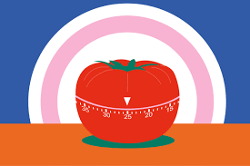

Time Management
Good time management reduces stress and improves academic performance.
- Use a planner
- Break tasks into steps
- Set daily goals
Good time management reduces stress and improves academic performance.

The Pomodoro Technique is a time management method that helps you stay focused by breaking work into short study sessions.
Best for: Reading, writing essays, reviewing lecture notes, and exam prep.
